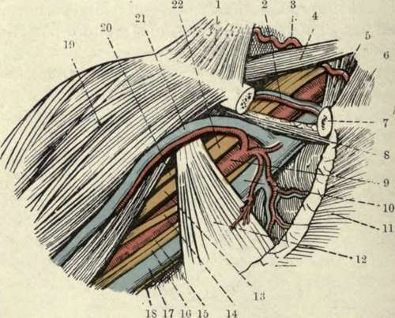
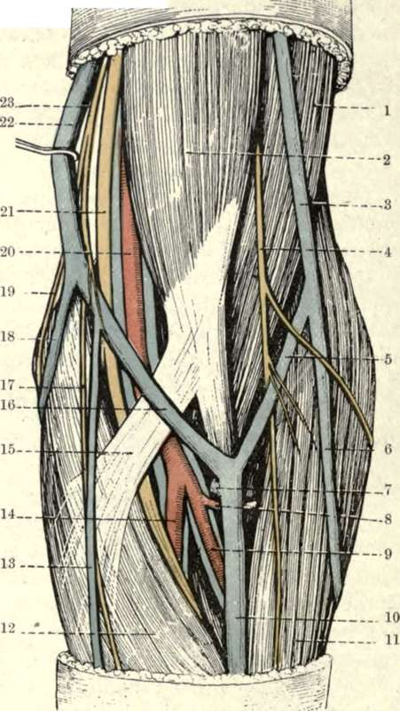

The Elbow. Surface Anatomy
Description
This section is from the book "Surgical Anatomy", by John A. C. MacEwen. Also available from Amazon: Surgical Anatomy.
The Elbow. Surface Anatomy
The lower end of the biceps muscle and its tendon form a tapering mass in the centre of the elbow, and is separated by an angular-shaped hollow from a mass on the outer side, consisting of supinator longus and extensor muscles, and from a mass on the inner, consisting of pronator radii teres and flexor muscles. The diverging limbs of the angle run into the outer and inner bicipital sulci, and its apex corresponds to the point where the biceps tendon dips down to its insertion. In this position, but external to the biceps tendon, the median vein of the forearm is joined by the deep median vein, and then divides into median basilic, which crosses the biceps tendon to occupy the inner sulcus, and median cephalic, which occupies the outer sulcus. The median basilic is joined by the posterior ulnar vein above the internal condyle, to form the basilic vein, and the median cephalic is joined by the radial vein at the level of the external condyle, to form the cephalic vein. More deeply placed in the inner groove are the brachial vessels and median nerve, while in the outer groove, deeply placed, are the terminations of the musculo-spiral nerve and superior profunda artery. The outer border of the biceps tendon is generally easily palpated, but the inner border is somewhat obscured by the bicipital fascia. The fold of the elbow, convex below, extends between the two condyles, a little above the joint line. The condyles form good landmarks, the internal being more prominent and less rounded than the outer, and their prominence is frequently taken advantage of in applying traction from the elbow. The olecranon is also well marked, lying nearer the internal than the external condyle. A depression between internal condyle and olecranon lodges the ulnar nerve, which may frequently be felt, and the posterior ulnar recurrent artery. To the outer side of the olecranon and below the external condyle is a depression, best marked when the limb is extended, in which the head of the radius may be felt, and which marks the separation of anconeus from radial extensors of the carpus and supinator longus. A line joining the two condyles is at right angles to the axis of the humerus. In extension the tip of the olecranon may lie a little above this line, but in flexion is below it, normally forming when flexed to a right angle an equilateral triangle with the condyles of the humerus. The line of the elbow-joint as a whole is equivalent to about two-thirds of, and is not parallel to, the intercondylar line ; for while the radio-humeral joint is parallel, and is situated ¾ inch below the external condyle, the ulnar-humeral joint slopes downwards and inwards, and is fully 1 inch below the internal condyle at its inner extremity. Hence in extension the forearm is at a slight angle with the upper arm, the apex directed inwards.
Fig. 50.-The Axillary Space, after Reflection of the Pectoralis Major ; and the Subclavian Triangle.
(From Buchanan's " Anatomy.")
1. | Trapezius. | 12. | Pectoralis minor. |
2. | Suprascapular vessels. | 13 | Outer head of median nerve. |
3 | Transverse cervical artery. | 14. | Inner head of median nerve. |
4 | Posterior belly of omo-hyoicl. | 15 | Internal cutaneous nerve. |
5 | Scalenus anticus. | 16. | Ulnar nerve. |
6. | Sterno-cleido-mastoid. | 17 | Axillary vein. |
7 | Clavicle in section. | 18. | Nerve of Wrisberg. |
8. | Subclavius. | 19. | Deltoid. |
9 | Axillary artery. | 20. | Musculocutaneous nerve. |
10. | Axillary vein. | 21. | Cephalic vein. |
11. | Pectoralis major (cut). | 22. | Brachial plexus. |
Tlie skin in front of the elbow is thin and mobile frequently possessing little subcutaneous fat, the superficial veins being visible through it. They may be rendered more prominent by moderate constriction of the arm. Their arrangement, forming a capital M by the median dividing into median basilic and cephalic, which are joined respectively by ulnar and radial, has already been described, but the arrangement is not constant. The median basilic is the most constant and least movable of these veins, and, further, having received the blood of the deep median, is the largest, while it has also thick walls, and was therefore generally selected for venesection (or phlebotomy). It crosses the biceps tendon and bicipital fascia, and is thus separated from the brachial vessels and median nerve. Notwithstanding the separation. the artery used occasionally to be wounded in venesection, an arterio-venous aneurism resulting ; and as the superficial lymphatics accompany the veins, acute lymphangitis was also not uncommon. The lymphatic gland lying above the internal condyle, which receives lymph from the inner side of the forearm and inner fingerò, is the lowest in the upper extremity, and has already been mentioned. Injury to nerves was sometimes occasioned in venesection, the internal cutaneous, when involved, causing a neuralgia, while inclusion of filaments of the musculo - cutaneous (lying over the median cephalic) in the scar has led to reflex irritation, and contraction of the biceps and brachialis anticus, which are supplied by the same spinal segment, a flexed arm resulting. The ante-cubital fossa is the triangular depression in front of the elbow. Under the deep fascia lie, centrally, the biceps tendon, with the brachial artery, accompanied by its venae comités, to its inner side. (The bicipital fascia, which covers the artery, is a strongly developed portion of the deep fascia, extending from the biceps tendon to the inner side of the arm.) To the inner side of the artery, at the junction of the inner and middle third of the elbow, lies the median nerve. Both artery and nerve are surrounded by loose fatty tissue, continuous above with that underlying the biceps, and below with that between the superficial and deep muscles of the forearm. On the outer side of the biceps tendon, at the junction of the outer and middle third of the elbow, lies the musculo-spiral nerve, dividing into radial and posterior interosseous branches, and the radial recurrent artery, anastomosing with the termination of the superior profunda. The brachial artery may be compressed by forced flexion of the elbow-joint, and aneurisms in this position have been treated by such flexion. In extreme extension also the vessel becomes flattened and compressed, and it has been ruptured by forcible extension applied to a flexed and injured elbow.
Fig. 51.- Superficial Dissection of the Front of the Left Elbow.
(From Buchanan's "Anatomy.")
1. | Brachialis amicus. | 14. | Ulnar artery and venas comités. |
2. | Biceps. | 15. | Bicipital fascia. |
3. | Cephalic vein. | 16. | Median basilic vein. |
4. | Musculocutaneous nerve. | 17. | Anterior branch of internal cutaneous nerve. |
5. | Median cephalic vein. | ||
6. | Radial vein. | 18. | Posterior ulnar vein. |
7. | Deep median vein. | 19. | Posterior branch of internal cutaneous nerve. |
8. | Radial recurrent artery. | ||
9. | Radial artery and venae comités. | 20. | Brachial artery and venae comités. |
IO. | Median vein. | 21. | Median nerve. |
11. | Brachio-radialis. | 22. | Basilic vein. |
12. | Pronator radii teres. | 23. | Internal cutaneous nerve. |
13. | Anterior ulnar vein. |
Continue to:
- prev: Fractures Of The Lower End Of The Humerus
- Table of Contents
- next: The Skin Over The Back Of The Elbow